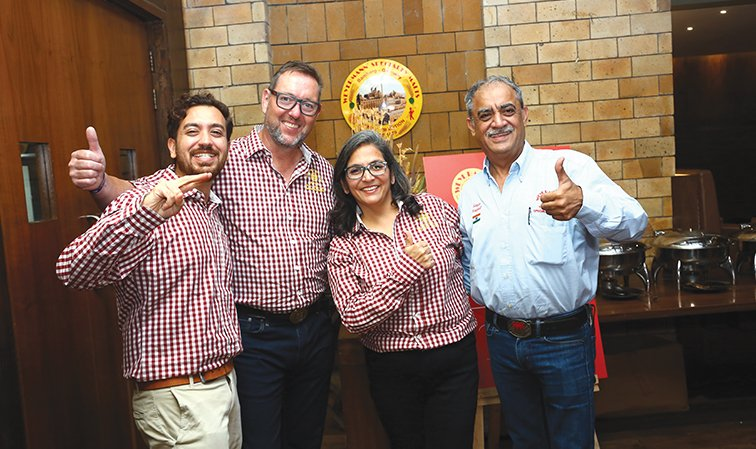

Buying Weyermann malt in India: a guide to OM Brewtech
OM Brewtech, long known as OM Distributors, is Weyermann's distribution partner for India. This guide covers who runs it, what it supplies besides malt and the ordering habits that keep imported malt in good shape.

Who OM Brewtech is
If you brew with Weyermann malt in India, the bags almost certainly came through one company in Gurugram. OM Brewtech India Pvt Ltd, which traded for years as OM Distributors, is the partner Weyermann names for India on its own distribution page. The contact listed there is Sanjiv Nagpal, the company's director.
OM describes itself as a distributor and supplier to the brewing and beverage trade, founded in 1997. The head office is an industrial shed in Udyog Vihar Phase VI, Gurugram. A branch office in Bengaluru, on Malleshpalya Main Road in New Thippasandra, puts people within reach of the city's brewpub trade.
How the Weyermann link began
The partnership goes back to one person. Pradeep Verma was Weyermann's techno-commercial associate for India and the SAARC countries from 1998. It was Verma who brought OM and the Bamberg maltster together, which made OM the sole distributor of Weyermann malts in India. In a tribute published after Verma's death, Nagpal credited his faith and guidance for the place OM has today in Indian craft brewing. Weyermann itself calls OM its long-standing distribution partner for India.
For a brewer that history is practical rather than sentimental. An importer that has handled one maltster's range for years knows the product names, the datasheets and the paperwork. When a lot looks wrong, there is one desk to call and someone there who has seen the problem before.
What they supply besides malt
Malt is the core of the business, though not all of it. According to OM's own listing, the range covers:
- Weyermann malts, from Pilsner base malt through CARAMUNICH to CARAFA, plus malt flours and extracts. Our Weyermann malts guide has a page on each one.
- Hopsteiner hops and hop extracts.
- Blefa stainless steel kegs, including slim and US-style kegs.
- Sahm beer glasses, which can be branded for a taproom.
- Beviclean glass washers, which run on mains water pressure with no electricity.
OM also says it supplies yeast and brewing machinery and offers after-sales support when a brewery is being set up. For a new brewpub that means malt, hops, kegs and glasses can come off one purchase order. That is convenient. It is also one supply line for everything, so know which beers you could still brew if a container is held at the port.
Every Weyermann malt, one guide each
Know which malt you want before you ring OM. Every malt in the Weyermann range has its own guide on this site, with the spec sheet numbers, the aroma wheel and a worked grist:
- Base malts: Pilsner Malt, Extra Pale Premium Pilsner Malt, Bohemian Pilsner Malt, Floor-Malted Bohemian Pilsner Malt, Floor-Malted Bohemian Dark Malt, Barke Pilsner Malt, Eraclea Pilsner Malt, Isaria 1924, Pale Ale Malt, Diastatic Barley Malt
- Kilned malts: Vienna Malt, Barke Vienna Malt, Munich Malt Type 1 and Type 2, Barke Munich Malt, Brewing Malt Type Cologne
- Caramel malts: CARAPILS, CARAHELL, CARAFOAM, CARABOHEMIAN, CARAMUNICH Type 1, 2 and 3, CARAAMBER, CARARED, CARAAROMA, CARABELGE, CARAWHEAT, CARARYE, Abbey Malt, Melanoidin Malt, Special W
- Roasted malts: CARAFA Type 1, 2 and 3, CARAFA SPECIAL Type 1, 2 and 3, Roasted Barley, Chocolate Wheat Malt, Chocolate Rye Malt
- Wheat, rye and spelt: Wheat Malt Pale, Wheat Malt Dark, Rye Malt Pale, Spelt Malt
- Smoked malts: Beech Smoked Barley Malt, Oak Smoked Wheat Malt
- Acid malt and sour wort: Acidulated Malt, Sour Wort
- Extracts: SINAMAR and malt extracts
The Weyermann malts guide explains how to read the spec sheets and wheels these guides all use.
Meeting the maltster in India
OM is also how Weyermann turns up in person. In 2023 OM hosted a Weyermann seminar at District 6 in Bengaluru, in the run-up to the Brews and Spirits Expo. Axel Jany, Weyermann's international malting and brewing expert, walked brewers and would-be brewery owners through the range. The evening closed with a tasting of beers brewed with the malts. In 2024 the OM team worked the Weyermann stand with Jany at drink technology India.
These sessions are worth a day off the brew deck. Questions about a malt's colour drift or why a CARAPILS beer will not hold foam get better answers from the maltster's own expert than from a forum thread.

Ordering imported malt without regrets
Weyermann malt crosses an ocean and a customs desk before it reaches you, so treat each order as a plan rather than a top-up. The habits that save money:
- Fix the season's recipes first. Order the specialty malts your grists actually call for, in the quantities they call for. A sack of Special W bought for one batch will sit in your store for a year.
- Ask for the certificate of analysis for each lot. Check colour and moisture against the ranges on the malt's datasheet before the malt goes into a recipe.
- Inspect the bags before you sign for them. Torn stitching or damp patches are easier to raise with the supplier on the day than a month later.
- Store malt off the floor, on pallets, in the coolest dry room you have. Fold and clip an opened bag every time.
That last point is where Indian weather bites. A caramel malt that has picked up moisture through a Bengaluru monsoon chews soft instead of snapping. At the mill it squashes into gummy flakes rather than clean grits. Your lauter pays for it. Our guide to sourcing malt and hops in India covers storage and stock planning in more detail.
Getting in touch
Weyermann's distribution partner page lists OM Brewtech's Gurugram address and its contact. Ring or write before you turn up at the shed. We have not printed prices, minimum orders or lead times here. They move with the euro, freight rates and duty, so get a current quote in writing.
Craft Beer School is not affiliated with OM Brewtech or with Weyermann. We wrote this guide because the question we hear most from new brewers after "which malt?" is "where do I buy it?"
Common questions
Who distributes Weyermann malt in India?
OM Brewtech India Pvt Ltd, earlier known as OM Distributors, based in Gurugram. Weyermann lists it as its distribution partner for India.
Does OM Brewtech have an office in South India?
Yes. Alongside the Gurugram head office it has a branch office in Bengaluru.
What else does OM Brewtech sell?
Hopsteiner hops, Blefa kegs, Sahm glassware and Beviclean glass washers, plus yeast, brewing equipment and set-up support, according to its own listing.
How do I check a malt lot before brewing with it?
Ask for the certificate of analysis for that lot. Compare its colour and moisture with the ranges on the malt's datasheet before you build a recipe around it.